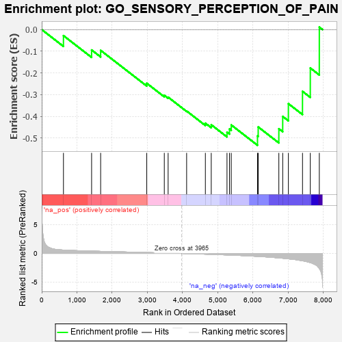
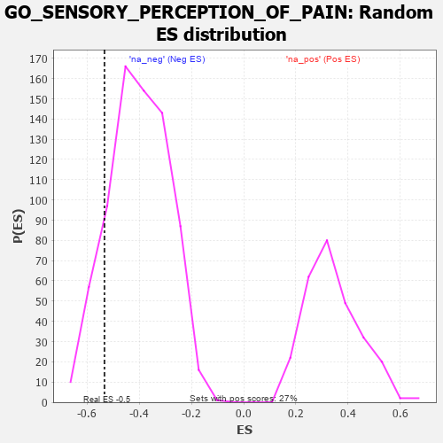

| | | Dataset | 7d |
| Phenotype | NoPhenotypeAvailable |
| Upregulated in class | na_neg |
| GeneSet | GO_SENSORY_PERCEPTION_OF_PAIN |
| Enrichment Score (ES) | -0.53345656 |
| Normalized Enrichment Score (NES) | -1.3235433 |
| Nominal p-value | 0.14090288 |
| FDR q-value | 0.44561344 |
| FWER p-Value | 1.0 |
Table: GSEA Results Summary

Fig 1: Enrichment plot: GO_SENSORY_PERCEPTION_OF_PAIN
Profile of the Running ES Score & Positions of GeneSet Members on the Rank Ordered List
| PROBE | GENE SYMBOL | GENE_TITLE | RANK IN GENE LIST | RANK METRIC SCORE | RUNNING ES | CORE ENRICHMENT | | 1 | KCND2 | | | 617 | 0.590 | -0.0279 | No |
| 2 | P2RY1 | | | 1416 | 0.407 | -0.0940 | No |
| 3 | BACE1 | | | 1673 | 0.360 | -0.0959 | No |
| 4 | ANO1 | | | 2982 | 0.152 | -0.2476 | No |
| 5 | CDK5 | | | 3480 | 0.080 | -0.3034 | No |
| 6 | MAPK3 | | | 3589 | 0.062 | -0.3117 | No |
| 7 | MTOR | | | 4114 | -0.025 | -0.3756 | No |
| 8 | NMUR2 | | | 4646 | -0.127 | -0.4316 | No |
| 9 | P2RX4 | | | 4813 | -0.161 | -0.4389 | No |
| 10 | SCN1A | | | 5260 | -0.261 | -0.4731 | No |
| 11 | NPY2R | | | 5331 | -0.281 | -0.4582 | No |
| 12 | GRIN1 | | | 5381 | -0.291 | -0.4399 | No |
| 13 | DLG2 | | | 6126 | -0.513 | -0.4903 | Yes |
| 14 | SCN9A | | | 6146 | -0.518 | -0.4491 | Yes |
| 15 | NPY1R | | | 6732 | -0.776 | -0.4574 | Yes |
| 16 | MGLL | | | 6842 | -0.838 | -0.4005 | Yes |
| 17 | CCR2 | | | 7003 | -0.939 | -0.3416 | Yes |
| 18 | GRM1 | | | 7404 | -1.272 | -0.2849 | Yes |
| 19 | TRPA1 | | | 7625 | -1.608 | -0.1773 | Yes |
| 20 | FYN | | | 7881 | -2.622 | 0.0113 | Yes |
Table: GSEA details [plain text format]

Fig 2: GO_SENSORY_PERCEPTION_OF_PAIN: Random ES distribution
Gene set null distribution of ES for GO_SENSORY_PERCEPTION_OF_PAIN